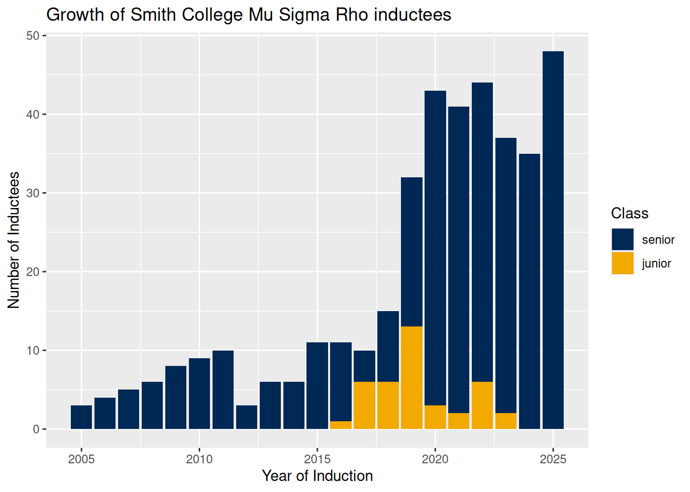
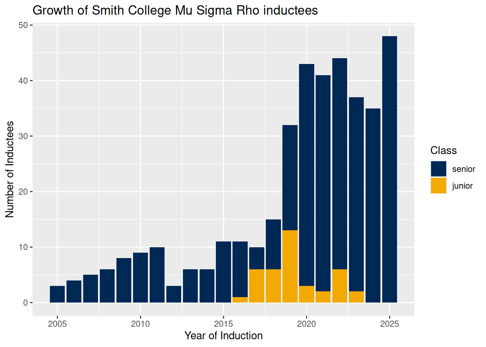

Mu Sigma Rho
Mu Sigma Rho is the national statistics honor society, and the Boston Chapter of the American Statistical Association oversees nominations from Smith each spring.

Search the archive to find inductees:
Mu Sigma Rho is the national statistics honor society, and the Boston Chapter of the American Statistical Association oversees nominations from Smith each spring.

Search the archive to find inductees: